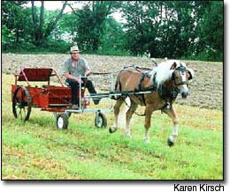

Learn How to Handle Working Horses
Horse Progress Days (HPD) is an Amish-organized affair that will take place July 1 and 2 in Middlebury, Ind. It features demonstrations of practical applications of draft animals in today's society. Many breeds of heavy horses, mules and even oxen are featured, performing traditional tasks with modern equipment.
Though it has been going on for more than a decade, HPD is perhaps one of the United States" best-kept secrets. In 1993, Elmer Lapp introduced the first event in Lancaster, Pa. Eleven years after its first appearance, HPD is still going strong, alternating its location among states with sizable Amish communities. As many as 10,000 visitors annually come to see and learn about ways of farming and logging that touch the Earth lightly. Fields and croplands surround the vendor site, and various pieces of agricultural and timber-harvesting equipment are put to use.
U.S. and European breeds on display include Belgians, Percherons, Suffolks, American Creams, Haflingers, Fjordhorses, Spotted Drafts, Draft Ponies, Shires, Clydesdales, miniature horses, assorted mules and oxen.
Vendors offer everything from books to horse-shoeing stocks, and noted authorities on many subjects give lectures and clinics. Vets talk about breeding, feeding and other health concerns. The clinic on conformation judging is the place to learn the difference between a "good" horse and a "bad" one.
For links to lodging and maps, or to learn more about Horse Progress Days 2004, visit www.rural heritage.com/progress .
Karen Kirsch
Louisville, Ohio
Healthy Home
When a house is being built, lots of debris and building scraps fall through the floor-register openings and end up in the ducts. Unless removed, the occupants risk breathing dangerous respiratory irritants such as fiberglass and wallboard dust. Have your ducts professionally cleaned, or if you do it yourself, be sure to use an N95 respirator to protect your lungs.
Donald Dyall Mount Pleasant, Iowa Bag Your Corn I was having problems with birds damaging the ripening ears of my sweet corn. Various scare tactics met with marginal success. What proved 100 percent effective for me was placing brown paper lunch bags over each of the ears as they neared maturity - after the silks began to turn brown and before the birds discovered them! Place a bag firmly over each ear, wedging a side of the bag between the ear and the stalk to help hold the bag in place. The birds either ignore the covered ears or are unable to defeat the bags.
As you harvest a mature ear, the used bag can then be placed on another ear that is getting close to ripening, thus conserving the number of total bags you need. The bags are inexpensive and an easy and effective way to protect your small garden plot. (I usually plant six 20-foot rows.) This same technique also seems to reduce worm problems.
Dennis E. Compton Dassel, Minnesota Tomato Tie-ups A great way to tie tomato plants to their poles without damaging the plants is with strips of discarded pantyhose. The soft, stretchy pantyhose strips work well because they don't cut into the stems as the tomato plants grow. I intercept my wife's pantyhose before they reach the trash bin, then cut them into neat half-inch strips. One pair of pantyhose is enough to tie up about 10 plants.
Scott Palm
Chaumont, New York
D ouble Cropping
I grow two gardens. One garden is for the current year's vegetable crop, while the other hosts a variety of soil-building cover crops over the growing season. This method has helped us rapidly build our garden's soil at our new homestead. Here in Zone 5, I plant oats in early spring as soon as the ground can be worked. In late June, I mow the oats, spread a light layer of compost on the clippings, then till the space. I then plant buckwheat. The fast-growing buckwheat gets mowed twice, just as the seed head starts to develop. The second mowing has a layer of compost applied to it before tilling, about mid-September. The garden space is then put to bed for the winter with a nice cover of rye.
I perfected this double-cropping method while gardening in a small space in town. I used a variety of cover crops, planting the covers as the vegetables waned. After we harvested early peas or spinach, we planted a cover crop in its space. I could mow with a hand mower and spade the area with a shovel. My garden soon had the friable soil structure of a garden that had been nurtured for many years.
The practice of double cropping your garden space is a good one. Weed pressure is easily controlled in a cover crop by mowing. The pest and disease cycle is broken by the constant crop rotation, while all these efforts return plant matter back to the soil for decomposition. The soil comes alive with microorganisms, worms and other beneficial insects, and the gardener reaps the harvest created by healthy, happy plants.
Double cropping your garden's spaces is a great way to enjoy summer days by playing in the dirt. Try it!
Ralph Rice
Jefferson, Ohio
Pillow Tip
I buy old drapes at flea markets and yard sales, and use them to make pillows for my living room sofa and chairs. Some are very luxurious since they are made from plush drapery material.
Charlotte Bryant
Greensburg, Ken tucky
Coming up next'
• Hollywood Ecoactivists Julia Louis-Dreyfus and Brad Hall talk about doing their part to work for a greener, better future.
• Why We Need Wilderness Special photos and an essay by the late nature writer Wallace Stegner in honor of the 40th anniversary of the Wilderness Act.
• Recycle Your Water Save thousands of gallons of water with these systems that let you reuse household waste water to irrigate your garden.
• Easy Timber Framing Learn how to use inexpensive chain saw mills and modern fasteners to build post-and-beam frames.
• From Suburbia to Superbia! How you can help transform any suburb into a friendlier, more sustainable community.
• Harvesting for Peak Flavor Discover the clues that will help you harvest each crop for maximum flavor.
• Beneficial Insects Learn which insects are the good guys, and the best ways to support them so they can protect your crops from pests.
• Rabies and Tetanus What every family needs to know about these two rare but dangerous diseases.
|
 |
|
|